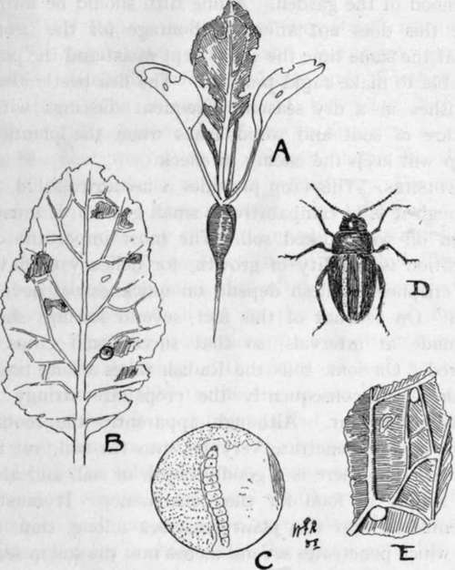

Turnips
Description
This section is from the book "School Gardening", by W. Francis Rankine. Also available from Amazon: School Gardening.
Turnips
This crop may be sown from March to July. It prefers a shaded station, and on account of this fact, it may be grown between Peas and Beans. Drills are drawn one inch deep and one foot apart, and in these the seed is thinly distributed. The seedlings are thinned out to nine inches apart. The surrounding surface soil must be kept fine and loose so that moisture is retained ; if the crop matures in hot weather the roots become coarse, lose flavour and are generally useless for the table. Another sowing may be made at the end of the summer or at the beginning of autumn. Turnip greens, or tops, are good for food, and are obtained by allowing the roots to stay in the ground.
The Best Varieties:-Model (for summer), Red Globe (for winter).
Pests
The turnip belongs to the cabbage family, and in common with the other members of that family it is often attacked by the Club Root fungus. The roots are distorted into curious shapes which have given rise to the name of " Finger and Toe." It should be treated in exactly the same way as recommended for the green vegetables in Chapter VII.
The Turnip Flea Beetle
The Turnip Fly, or Flea Beetle, causes a great amount of damage to young plants. The riddled seed leaves and foliage leaves indicate the presence of the pest, and a careful examination of the bed will undoubtedly reveal the beetle itself. It is about one-tenth of an inch in length, dark in colour and marked on each wing case with a yellowish stripe. Its strong legs enable it to take long leaps, and its well-developed wings carry it long distances. As soon as the Turnip seedlings push through, the beetles appear, and at once commence to feed on the seed leaves. It then places its eggs on the foliage, or " rough " leaves ; from these eggs emerge the larvae which mine their way into the leaves and feed on the plant juices. These attacks on the young plant naturally rob it of its vigour. When the larvae are full-fed, they drop to the ground and change to the pupa form ; in about three weeks from the time of laying the eggs another generation of beetles appears to carry on the same scheme of operations. The beetles are able to spend the winter under stones, clods, or in refuse. Hence the first preparation on the part of the gardener is to clear away all rubbish from the neighbourhood of the garden. A fine tilth should be formed, since this does not afford harbourage for the beetles, and at the same time the soil is kept moist and the plants are able to make rapid progress. The flea beetle always flourishes in a dry season. Frequent dustings with a mixture of soot and wood ashes when the plants are damp will keep the enemy in check.
Fig. 35. turnip flea beetle (Haltica nemorum).
A.-Young Radish plant attacked by beetle. B.-A rough leaf of Radish showing the maggots boring into the leaf tissue. C.-Enlarged view of a maggot at work in the leaf. D.-The beetle. E.-Enlarged drawing of a portion of a rough leaf showing eggs.
Continue to:
- prev: Carrots
- Table of Contents
- next: Radishes